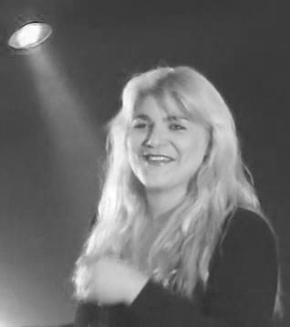

1956 was niet enkel de eerste keer dat het Eurovisiesongfestival plaatsvond maar ook meteen het eerste jaar dat België meedeed aan deze zangwedstrijd. Tijdens de eerste editie had elk land 2 kandidaten, voor België waren dit 'Fud Leclerc' en 'Mony Marc'.De 2 kandidaten 'Fud Leclerc' en 'Mony Marc' Zijn beidde afkomstig uit Wallonië over Mony Marc vind je zo goed als nergens informatie, het enige wat je met zekerheid kan vinden is dat ze het liedje 'Le plus beau jour de ma vie' heeft gezongen tijdens de wedstrijd, van 'Fud Lecrec' ofwel 'Fernand Urbain Dominic Leclerc' vinden we wel meer informatie. Naast dat hij het liedje 'Messieurs les noyés de la Seine' zong in 1956, we weten ook dat hij geboren is te Montluçon in 1924 en overleden te Ganshoren op 20 september 2010. Fud Leclerc heeft wel 4 keer deelgenomen aan de wedstrijd.
1986 was voor België een top jaar in deze wedstrijd, we behaalde de eerste plaats met onze zangeres Sandra Kim, zij won deze wedstrijd voor ons land met het welgekende liedje J'aime la vie. Sandra Kim is geboren in Montegnée dit is een deelgemeente in de provincie Luik, ze staat bekend als jongste winnares ooit van het Eurovisiesongfestival. Sandra Kim was 13 jaar en 7 maanden oud toen ze voor België deze wedstrijd won, zangeres is ze altijd gebleven maar geen enkele single heeft het nummer j'aime la vie kunnen evenaren.
Na de overwinning van Sandra Kim mag ons klein nederig landje zich benoemen tot gastland van het Eurovisiesongfestival. Deze tweeëndertigste editie vond plaats op 9 mei 1987 in het eeuwfeestpaleis te Brussel. Het hele gebeuren werd gepresenteerd door 'Viktor Lazlo', een Frans-Belgische zangeres/actrice. De winnaar van deze editie was Ierland, die toen hun 3de overwinning in deze wedstrijd binnenhaalde met het nummer Hold me now van 'Johnny Logan'. Maar dit was niet de eerste keer dat de befaamde 'Jhonny Logan' deze wedstrijd won, in 1980 won hij met het nummer What's another year.
In 2018 vond de alweer 63ste editie plaats van het
Eurovisiesongfestival. De populaire liedjeswedstrijd werd gehouden in Portugal. In 2017 selecteerde de
VRT Sennek om ons te vertegenwoordigen in Lissabon. Sennek, die bij vrienden beter bekend staat als
Laura Groeseneken is een jonge Belgische zangeres. Op 30 april 1990 zag zij voor het eerst het licht en
vandaag op haar 28ste stond ze in de grote schijnwerper van het Eurovisie. Sennek werkte in het verleden
al samen met Ozark Henry en Alex Callier van Hooverphonic.
Het nummer “a mater of time” sloeg misschien wel aan in de Belgische hitlijsten, maar tijdens de eerste
halve finale kon België jammer genoeg ophoepelen. We eindigden hier op de 12de plaats met 91 punten. De
Leuvense schone stond nochtans heel snel in de top 10 bij de bookmakers. Maar even snel bleek dat ze de
hoge verwachtingen niet kon inlossen. Alleen op een podium staan was toch even wat anders. Sennek, en
België kreeg heel wat negatieve commentaar te verduren. Het lied, alsook de belichting en de outfit
zouden gewoonweg saai gevonden worden.